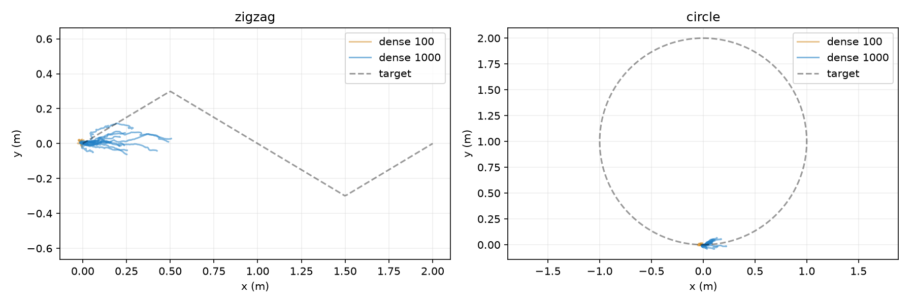

학습·평가 완료. 진행량·낙상과 기존 보상을 함께 보고 판단해야 한다.
zigzag: 학습 제외 4형상 진행 중앙값 0.1921 m, 생존 4/4. circle: 학습 제외 4형상 진행 중앙값 0.0179 바퀴, 생존 4/4.
같은 E·S0·seed0·PPO 구조를 사용했다. 새 학습 보상은 목표 접선속도 0.5m/s, 실제 전진, 경로 유지 보상과 정지·역주행·자세·행동 변화·토크 패널티다. 0.5초 출발 유예, 낙상 시 -20을 적용했다. 표의 보상은 변경하지 않은 기존 평가식이다.
해석: 같은 100 update에서는 두 task 모두 진행 개선이 확인되지 않았다. 1000 update 결과는 학습량도 10배이므로 개선을 보상 변경 하나의 효과로 단정할 수 없다. 지그재그 전체 전진은 약 0.224m/3.98초(평균 약 0.056m/s)로, 목표 속도 0.5m/s에 크게 못 미친다.
기존 실험과 같은 100 update(76,800 전이)에서 보상 변경을 비교하고, 추가로 1000 update(768,000 전이) 결과를 분리했다. E는 고정, S는 물리 실행 결과다. 새 학습 보상값의 크기를 구 보상과 직접 비교하지 않는다.
| Task | 분할 | 정책 | 기존 보상 중앙값 | 진행 중앙값 | 생존 | 폭 밖 오차 RMS 중앙값(m) |
|---|---|---|---|---|---|---|
| zigzag | 전체 | 학습 전 | -0.2374 | 0.0013 | 16/16 | 0.0000 |
| zigzag | 전체 | 기존 보상·100 update | -0.1738 | 0.0045 | 16/16 | 0.0000 |
| zigzag | 전체 | 새 보상·100 update | -0.7244 | -0.0076 | 16/16 | 0.0000 |
| zigzag | 전체 | 새 보상·1000 update | -0.2576 | 0.2238 | 16/16 | 0.0000 |
| zigzag | 학습 제외 | 학습 전 | -0.2639 | 0.0002 | 4/4 | 0.0000 |
| zigzag | 학습 제외 | 기존 보상·100 update | -0.2125 | -0.0035 | 4/4 | 0.0000 |
| zigzag | 학습 제외 | 새 보상·100 update | -0.7241 | -0.0091 | 4/4 | 0.0000 |
| zigzag | 학습 제외 | 새 보상·1000 update | -0.2913 | 0.1921 | 4/4 | 0.0001 |
| circle | 전체 | 학습 전 | -0.0296 | -0.0000 | 16/16 | 0.0000 |
| circle | 전체 | 기존 보상·100 update | -0.0719 | 0.0011 | 16/16 | 0.0000 |
| circle | 전체 | 새 보상·100 update | -0.3813 | -0.0039 | 16/16 | 0.0000 |
| circle | 전체 | 새 보상·1000 update | -0.0081 | 0.0149 | 16/16 | 0.0000 |
| circle | 학습 제외 | 학습 전 | -0.0815 | 0.0002 | 4/4 | 0.0000 |
| circle | 학습 제외 | 기존 보상·100 update | -0.0684 | 0.0011 | 4/4 | 0.0000 |
| circle | 학습 제외 | 새 보상·100 update | -0.4500 | -0.0049 | 4/4 | 0.0000 |
| circle | 학습 제외 | 새 보상·1000 update | 0.0260 | 0.0179 | 4/4 | 0.0000 |
지그재그 진행 단위 m, 원형은 바퀴. 폭 밖 오차는 기존 p_lane의 제곱근이며 경로 폭 내부 오차는 0으로 기록된다. 생존만으로 task 성공을 선언하지 않는다.
첫 학습 제외 형상 12번, 왼쪽 기존 guidance, 오른쪽 새 보상으로 1000 update 학습한 RL. 저장된 qpos 재생, 4초 실제 속도. 낙상 이후는 마지막 기록을 유지한다.

단일 seed·4초 평가이며 장기 보행을 입증하지 않는다. 형상 E 최적화와 diffusion 공동 생성 통합은 수행하지 않았다.